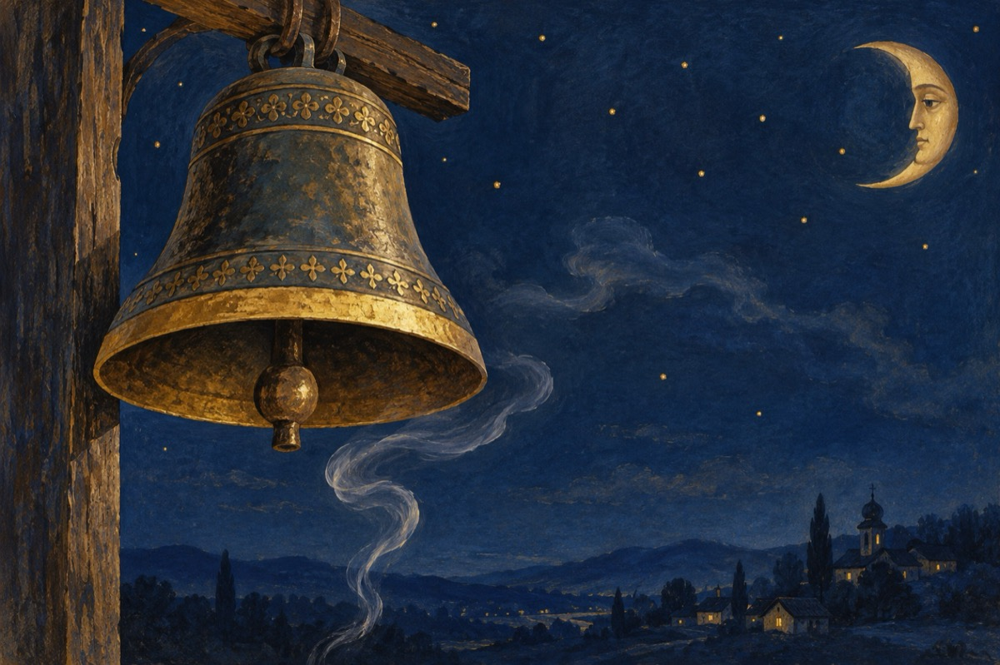

S.O.S
-Api mă nărodule ce-ai?
De duhănești tătă zâua
-No, api ăsta nu e bai.
Ascultă-mă, numa!
Eu să zâc că ai direptate,
Da tu măi Albuțule,
De ce îmbli pe-mbătate
Păstă tăce crâșmele?
-Am șâ io un beceșug
Tătă zâua-s pă bucată,
Ba la coasă, ba la plug.
Și c-o gură dă vin ars, gata mă îmbeată!
Dară beceșugul tău,
Numa' crucea îl îndreaptă!
Nărodule, ț-o zâc eu,
O s-ajungi s-astupi o groapă!
Din atâta duhănit,
Plomânii țâ s-or gătat
Sună-ți clopotu-a sfârșât
Lasă-ce mă de fumat!
Că-i mai avea de trăit!
Vasile Groza